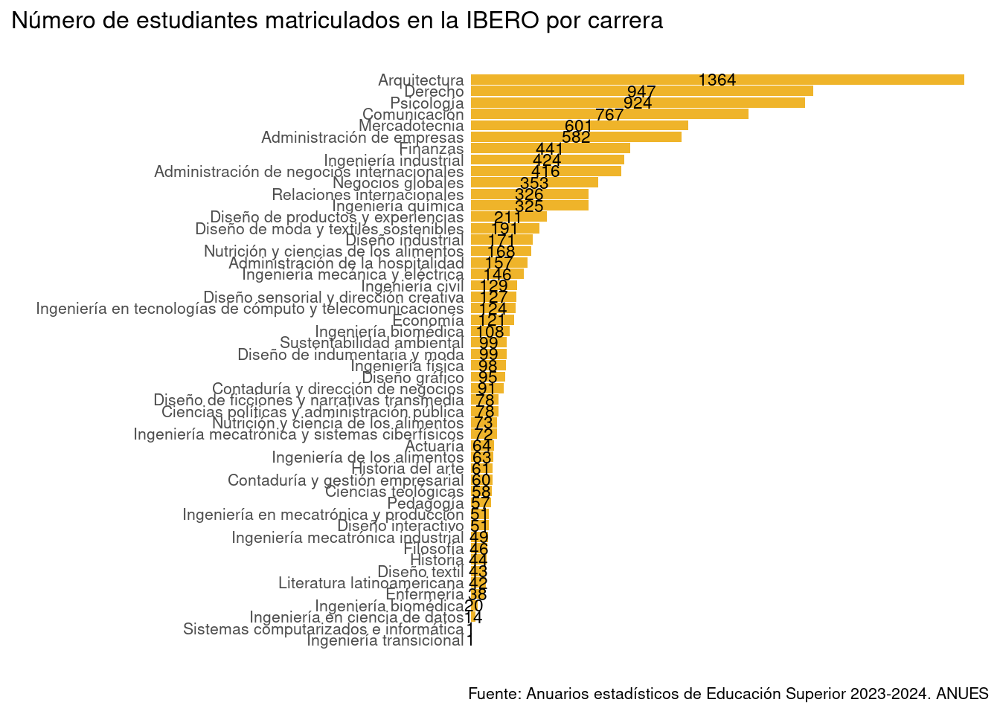

print("Soy una celda de código")[1] "Soy una celda de código"En este curso vamos a estar usando documentos como este que tienes frente a tí. A estos documentos se conoce como notebooks. Los notebooks son archivos muy flexibles que permiten integrar texto en prosa (como este), código y figuras.
En este notebook vemos las principales características de los notebooks, creamos nuestro primer programa y vemos un ejemplo del tipo de análisis que se pueden hacer con R.
Objetivos
Los notebooks tienen básicamente 2 cosas:
Los notebooks no permiten editar cada mínimo detalle del diseño del documento (e.g., cambiar color, cambiar la fuente y su tamaño). Esto se debe a que son archivos diseñados para hacer análisis de datos y ejecutar código no para hacer diseño gráfico.
Algo interesante a notar es que todo el formato que puedes ver del texto se le da con un código muy simple. Si cambias el modo de ver el documento de “Visual” a “Source” podrás ver que el formato del texto en realidad se les da a los elementos agregándoles cosas como asteríscos y cosas raras. A estas reglas se les conoce como RMarkdown, pero por ahora eso no es importante…
print("Soy una celda de código")[1] "Soy una celda de código"Las celdas de código son los comandos que nosotros le podemos pasar a R para que haga cosas. Para pasarle a R nuestro código debemos ejecutar la celda. Para ello hay que dar click en el pequeño signo ⏵ («Run current chunk»). Al ejecutar el código el resultado sale en dos lados: (1) debajo de la celda de código y (2) en la consola de R. A veces puede llegar a ser poco práctico ver los resultados debajo de la celda de código ya que ocupa mucho espacio y se hace más confuso saber qué es código y que no lo es. Podemos desactivar esta opción dando click en el engrane («Edit de Rmarkdown options…») y seleccionando «Chunk Output in Console».
Cuando uno aprende a programar generalmente inicia creando el programa ¡Hola mundo!. Este es un programa muy simple que lo único que hace es imprimir en la pantalla el texto ¡Hola mundo!.
En R ese programa se ve así:
print("¡Hola mundo!")Aquí lo que tenemos son solo 2 cosas:
print(), la cual imprime en la pantalla el texto que se le pase entre sus paréntesis, y"¡Hola mundo!", aquí son muy imporantes las comillas, ya que esas le indican a R que eso no es parte de su lenguaje sino que es simplemente texto.Ahora ejecuta el programa que está escrito en la siguiente celda:
print("¡Hola mundo!")[1] "¡Hola mundo!""¡Hola! Mi nombre es <TU NOMBRE>". Al terminar corre la celda para ejecuta tu programa.Ya aprendimos qué son los notebooks y cómo se usan, pero el ejemplo que vimos es muy aburrido y poco útil. Veamos cómo se ve un ejemplo más interesante donde analizamos y visualizamos la matrícula de estudiantes de licenciatura en México.
El siguiente ejemplo muestra un análisis de datos reales de los Anuarios Estadísticos de Educación Superior de la ANUIES. Estos datos contienen información sobre el número de estudiantes matriculados en distintas universidades de todo México. Estos son datos los sacan cada año y los que vamos a analizar corresponden al ciclo escolar 2023-2024. No te proecupes por entender el código, el objetivo de este ejemplo es solo que veas cómo se pueden analizar datos con R.
Importamos paqueterías que vamos a usar para nuestro procesamiento de datos.
# install.packages(c("tidyverse", "janitor"))
library(tidyverse)── Attaching core tidyverse packages ──────────────────────── tidyverse 2.0.0 ──
✔ dplyr 1.1.4 ✔ readr 2.1.5
✔ forcats 1.0.0 ✔ stringr 1.5.1
✔ ggplot2 3.5.2 ✔ tibble 3.3.0
✔ lubridate 1.9.4 ✔ tidyr 1.3.1
✔ purrr 1.1.0
── Conflicts ────────────────────────────────────────── tidyverse_conflicts() ──
✖ dplyr::filter() masks stats::filter()
✖ dplyr::lag() masks stats::lag()
ℹ Use the conflicted package (<http://conflicted.r-lib.org/>) to force all conflicts to become errorslibrary(janitor)
Attaching package: 'janitor'
The following objects are masked from 'package:stats':
chisq.test, fisher.testImportamos los datos del anuario enstadístico de la ANUIES.
anuario_2023_2024 <- read_csv(
"./data/anuario_educacion_superior_2023-2024_v1-2.csv",
skip = 3,
n_max = 47814,
col_select = c(1, 3, 6, 7, 8, 10, 12, 14, 15, 16)
) |>
clean_names() |>
pivot_longer(
cols = starts_with("matricula"),
names_to = "genero",
values_to = "matricula",
names_prefix = "matricula_"
)Rows: 47814 Columns: 10
── Column specification ────────────────────────────────────────────────────────
Delimiter: ","
chr (8): ENTIDAD FEDERATIVA, TIPO DE SOSTENIMIENTO, NOMBRE INSTITUCIÓN, NOMB...
num (2): Matrícula Mujeres, Matrícula Hombres
ℹ Use `spec()` to retrieve the full column specification for this data.
ℹ Specify the column types or set `show_col_types = FALSE` to quiet this message.Los datos del anuario incluyen varias columnas con información del número de matriculados en cada programa de estudios en las instituciónes de educación superior de México:
View(anuario_2023_2024)Vamos a centrarnos sólo en los estudiantes de nivel licenciatura. Para ello seleccionamos únicamente los registros de programas de licenciatura.
licenciatura <- anuario_2023_2024 |>
filter(nivel_de_estudios == 'LICENCIATURA UNIVERSITARIA Y TECNOLÓGICA')Ahora podemos empezar a explorar nuestros datos. Primero veamos, ¿cuáles son las universidades que tienen más estudiantes?
licenciatura |>
group_by(nombre_institucion) |>
summarise(
matricula_total = sum(matricula)
) |>
arrange(desc(matricula_total)) |>
print(n = 100)# A tibble: 2,973 × 2
nombre_institucion matricula_total
<chr> <dbl>
1 UNIVERSIDAD NACIONAL AUTÓNOMA DE MÉXICO 229141
2 UNIVERSIDAD DE GUADALAJARA 136980
3 INSTITUTO POLITÉCNICO NACIONAL 132288
4 UNIVERSIDAD AUTÓNOMA DE NUEVO LEÓN 128716
5 UNIVERSIDAD ABIERTA Y A DISTANCIA DE MÉXICO 114714
6 UNIVERSIDAD TECNOLÓGICA DE MÉXICO 94344
7 BENEMÉRITA UNIVERSIDAD AUTÓNOMA DE PUEBLA 91722
8 UNIVERSIDAD TECNOLÓGICA LATINOAMERICANA EN LÍNEA 82967
9 UNIVERSIDAD DEL VALLE DE MÉXICO 74920
10 UNIVERSIDAD AUTÓNOMA DE SINALOA 74210
11 UNIVERSIDAD AUTÓNOMA DEL ESTADO DE MÉXICO 68343
12 UNIVERSIDAD AUTÓNOMA DE BAJA CALIFORNIA 66885
13 UNIVERSIDAD VERACRUZANA 65096
14 UNIVERSIDAD AUTÓNOMA METROPOLITANA 54266
15 INSTITUTO TECNOLÓGICO Y DE ESTUDIOS SUPERIORES DE MONTERREY 52525
16 UNIVERSIDAD MICHOACANA DE SAN NICOLÁS DE HIDALGO 39697
17 UNIVERSIDAD VIZCAYA DE LAS AMÉRICAS 37569
18 UNIVERSIDAD AUTÓNOMA DE CIUDAD JUÁREZ 36765
19 UNIVERSIDAD DE SONORA 35694
20 UNIVERSIDAD AUTÓNOMA DE TAMAULIPAS 35671
21 UNIVERSIDAD AUTÓNOMA DE GUERRERO 33282
22 UNIVERSIDAD VIRTUAL DEL ESTADO DE GUANAJUATO 33214
23 UNIVERSIDAD AUTÓNOMA DEL ESTADO DE HIDALGO 32947
24 UNIVERSIDAD AUTÓNOMA DE SAN LUIS POTOSÍ 30166
25 UNIVERSIDAD AUTÓNOMA DE CHIAPAS 29471
26 UNIVERSIDAD TRES CULTURAS 28264
27 UNIVERSIDAD AUTÓNOMA DEL ESTADO DE MORELOS 26523
28 UNIVERSIDAD AUTÓNOMA DE COAHUILA 26471
29 UNIVERSIDAD JUÁREZ AUTÓNOMA DE TABASCO 26248
30 UNIVERSIDAD DE GUANAJUATO 26174
31 UNIVERSIDAD AUTÓNOMA DE ZACATECAS 25942
32 ENSEÑANZA E INVESTIGACIÓN SUPERIOR, A.C. 25727
33 UNIVERSIDAD AUTÓNOMA DE CHIHUAHUA 25363
34 UNIVERSIDAD LATINOAMERICANA, S.C. 24623
35 UNIVERSIDAD POPULAR AUTÓNOMA DE VERACRUZ 24297
36 UNIVERSIDAD INTERAMERICANA PARA EL DESARROLLO 24023
37 UNIVERSIDAD AUTÓNOMA DE LA CIUDAD DE MÉXICO 23871
38 INSTITUTO DE ESTUDIOS SUPERIORES DE LA CIUDAD DE MÉXICO ROS… 23319
39 CENTRO DE ESTUDIOS SUPERIORES EN CIENCIAS JURÍDICAS Y CRIMI… 22640
40 UNIVERSIDAD AUTÓNOMA DE QUERÉTARO 21980
41 UNIVERSIDAD AUTÓNOMA DE OCCIDENTE 21777
42 UNIVERSIDAD AUTÓNOMA DE DURANGO A.C. 20767
43 UNIVERSIDAD UNIVER 19114
44 INSTITUTO UNIVERSITARIO DEL CENTRO DE MÉXICO 18774
45 UNIVERSIDAD CNCI 18229
46 UNIVERSIDAD AUTÓNOMA BENITO JUÁREZ DE OAXACA 18218
47 UNIVERSIDAD AUTÓNOMA DE YUCATÁN 17273
48 UNIVERSIDAD MEXIQUENSE DEL BICENTENARIO 16885
49 INSTITUTO TECNOLÓGICO DE SONORA 16444
50 UNIVERSIDAD AUTÓNOMA DE TLAXCALA 16216
51 UNIVERSIDAD AUTÓNOMA DE AGUASCALIENTES 16070
52 UNIVERSIDAD AUTÓNOMA DE NAYARIT 15783
53 UNIVERSIDAD ESTATAL DE SONORA 15090
54 UNIVERSIDAD JUÁREZ DEL ESTADO DE DURANGO 14542
55 INSTITUTO DE ESTUDIOS UNIVERSITARIOS, A.C. 14345
56 UNIVERSIDAD CUAUHTÉMOC 13828
57 UNIVERSIDAD ALFA Y OMEGA 13650
58 UNIVERSIDAD DE COLIMA 13649
59 INSTITUTO DE CIENCIAS Y ESTUDIOS SUPERIORES DE TAMAULIPAS, … 13104
60 UNIVERSIDAD INSURGENTES 12761
61 UNIVERSIDAD ANÁHUAC 12641
62 INSTITUTO TECNOLÓGICO JOSÉ MARIO MOLINA PASQUEL Y HENRÍQUEZ 12374
63 UNIVERSIDAD PANAMERICANA 12005
64 GRUPO TECNOLÓGICO UNIVERSITARIO 11860
65 UNIVERSIDAD DE MONTERREY 11827
66 INSTITUTO DE EDUCACIÓN DIGITAL DEL ESTADO DE PUEBLA 11490
67 UNIVERSIDAD METROPOLITANA DE MONTERREY 11432
68 INSTITUTO TECNOLÓGICO DE TIJUANA 11007
69 UNIVERSIDAD CIUDADANA DE NUEVO LEÓN 10889
70 UNIVERSIDAD IBEROAMERICANA - CIUDAD DE MÉXICO 10669
71 INSTITUTO TECNOLÓGICO Y DE ESTUDIOS SUPERIORES DE OCCIDENTE 10472
72 UNIVERSIDAD AUTÓNOMA DE GUADALAJARA 10319
73 UNIVERSIDAD DE LOS ÁNGELES 10306
74 UNIVERSIDAD POPULAR AUTÓNOMA DEL ESTADO DE PUEBLA 10151
75 ESCUELA BANCARIA Y COMERCIAL, S.C. 9579
76 UNIVERSIDAD MEXICANA 9564
77 UNIVERSIDAD DE CIENCIAS Y ARTES DE CHIAPAS 9303
78 CENTRO UNIVERSITARIO UNE 9298
79 UNIVERSIDAD DE LEÓN 9211
80 UNIVERSIDAD AUTÓNOMA INDÍGENA DE MÉXICO 9000
81 UNIVERSIDAD DEL ATLÁNTICO 8752
82 INSTITUTO TECNOLÓGICO DE PUEBLA 8607
83 UNIVERSIDAD PRIVADA DEL ESTADO DE MÉXICO 8538
84 UNIVERSIDAD LA SALLE, A.C. - BAJÍO 8191
85 FUNDACIÓN UNIVERSIDAD DE LAS AMÉRICAS, PUEBLA 8162
86 UNIVERSIDAD DEL VALLE DE ATEMAJAC 8030
87 UNIVERSIDAD DEL DESARROLLO PROFESIONAL 7850
88 UNIVERSIDAD ANÁHUAC - MAYAB 7780
89 UNIVERSIDAD PEDAGÓGICA NACIONAL 7777
90 INSTITUTO TECNOLÓGICO DE CIUDAD MADERO 7635
91 UNIVERSIDAD AUTÓNOMA DE BAJA CALIFORNIA SUR 7600
92 INSTITUTO TECNOLÓGICO SUPERIOR DE IRAPUATO 7534
93 UNIVERSIDAD DE IXTLAHUACA CUI A.C. 7528
94 CENTRO UNIVERSITARIO UTEG 7500
95 UNIVERSIDAD EN MOVIMIENTO 7454
96 UNIVERSIDAD AUTÓNOMA DE CAMPECHE 7416
97 INSTITUTO TECNOLÓGICO DE OAXACA 7244
98 INSTITUTO TECNOLÓGICO DE SALTILLO 7205
99 TECNOLÓGICO DE ESTUDIOS SUPERIORES DE ECATEPEC 7191
100 UNIVERSIDAD INTERACTIVA Y A DISTANCIA DEL ESTADO DE GUANAJU… 7055
# ℹ 2,873 more rowsAhora veamos cuales fueron en el ciclo 2023-2024 las carreras más estudiadas en México:
licenciatura |>
group_by(nombre_programa_educativo) |>
summarise(
matricula_total = sum(matricula)
) |>
arrange(desc(matricula_total)) |>
print(n = 10)# A tibble: 4,109 × 2
nombre_programa_educativo matricula_total
<chr> <dbl>
1 LICENCIATURA EN DERECHO 343437
2 LICENCIATURA EN PSICOLOGÍA 181666
3 LICENCIATURA EN ENFERMERÍA 159386
4 LICENCIATURA EN PEDAGOGÍA 133682
5 INGENIERÍA INDUSTRIAL 129714
6 LICENCIATURA EN ADMINISTRACIÓN 124907
7 LICENCIATURA EN ADMINISTRACIÓN DE EMPRESAS 97959
8 INGENIERÍA EN SISTEMAS COMPUTACIONALES 83326
9 LICENCIATURA EN ARQUITECTURA 80846
10 INGENIERÍA EN GESTIÓN EMPRESARIAL 72059
# ℹ 4,099 more rowsAhora investiguemos cuales son las licenciaturas con mayor matrícula en la Ibero. ¿Cuántos estudiantes hay en LISA? Hagamos una visualización para explorar esto.
licenciatura |>
filter(
nombre_institucion == "UNIVERSIDAD IBEROAMERICANA - CIUDAD DE MÉXICO"
) |>
mutate(
nombre_corto_programa = str_to_sentence(
str_replace(nombre_programa_educativo, "LICENCIATURA EN", "")
)) |>
filter(matricula > 0) |>
group_by(nombre_corto_programa) |>
summarise(
matricula = sum(matricula)
) |>
ggplot(
aes(
x = matricula,
y = fct_reorder(nombre_corto_programa, matricula),
label = matricula
)) +
geom_col(fill = "#EFB42A") +
geom_text(
position = position_stack(vjust = 0.5),
size = 3
) +
labs(
y = "",
x = "",
title = "Número de estudiantes matriculados en la IBERO por carrera",
caption = "Fuente: Anuarios estadísticos de Educación Superior 2023-2024. ANUES"
) +
theme_minimal() +
theme(
text=element_text(size = 10),
plot.title = element_text(size = 12, hjust = 0, margin = margin(b = 20)),
plot.title.position = "plot",
panel.grid.major.y = element_blank(),
panel.grid.major.x = element_blank(),
panel.grid.minor.x = element_blank(),
axis.text.x = element_blank(),
axis.text.y = element_text(margin = margin(r = -12))
) 
UNIVERSIDAD IBEROAMERICANA - CIUDAD DE MÉXICO y sustituye ese texto por UNIVERSIDAD ANÁHUAC. Observa cómo cambia tu gráfica ¿Cuál es la licenciatura con más estudiantes en la Aháhuac?UNIVERSIDAD AUTÓNOMA METROPOLITANA. ¿Cuál es la licenciatura con más estudiantes en la UAM?UNIVERSIDAD IBEROAMERICANA - PUEBLA). ¿Cuál es la licenciatura con más estudiantes en la IBERO de Puebla?